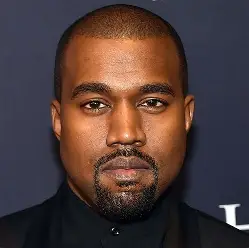

My name is Kanye West, also known as Ye. I am an American rapper, songwriter, record producer, and fashion designer. I was born on June 8, 1977, in Atlanta, Georgia, and I grew up in Chicago, Illinois. I became interested in music at a young age and eventually began producing music for other artists before becoming a successful solo rapper. My debut album, *The College Dropout*, was released in 2004 and received widespread attention. Throughout my career, I have released many albums and worked with numerous artists. I have also explored fashion and other creative industries. I am known for expressing my ideas through music, fashion, and art, and my career has included both major achievements and significant controversies.
